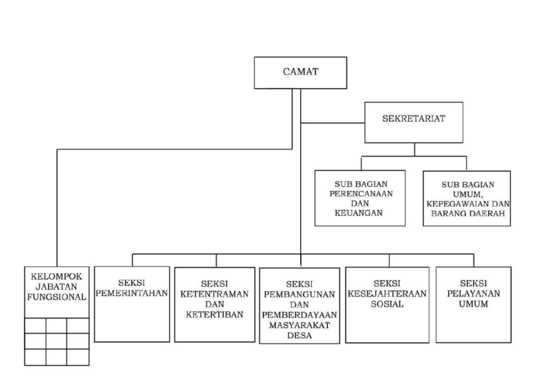

Struktur organisasi Kecamatan Patokbeusi disusun untuk mendukung pelayanan pemerintahan yang efektif dan efisien kepada masyarakat.
Setiap bagian dalam struktur organisasi memiliki tugas dan tanggung jawab masing-masing sesuai dengan bidang kerjanya.
Camat sebagai pimpinan kecamatan bertugas mengoordinasikan seluruh kegiatan pemerintahan dan pelayanan publik di wilayah Kecamatan Patokbeusi.
Selain camat, terdapat sekretaris kecamatan dan beberapa seksi yang membantu pelaksanaan administrasi, pembangunan, dan pelayanan masyarakat.
Dengan adanya struktur organisasi yang jelas, diharapkan pelayanan kepada masyarakat dapat berjalan lebih baik dan teratur.